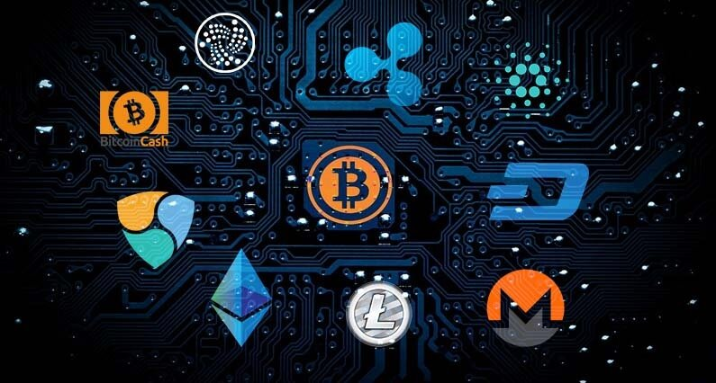
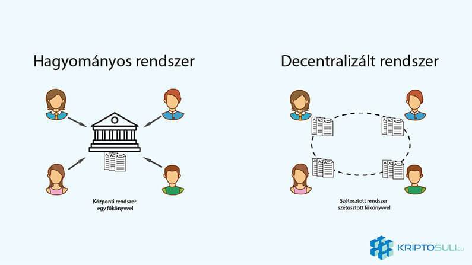
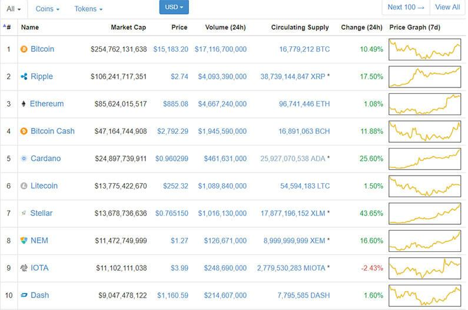

Mik azok a Kriptopénzek? - Útmutató kezdőknek
A kriptopénzek egy izgalmas új technológia amely alapjaiban fogja megváltoztatni pénzhez való hozzáállásunkat, legyen az pénzküldés, költekezés vagy akár befektetés. Bár egyelőre az emberek nagy része csak Bitcoin-t ismeri, sokkal többről van itt szó. Ez az ismertető egy jó kiindulási pont lesz, hogy megtudd miről is van szó.
Mi az a kriptopénz?
Kriptopénz egy blokklánc technológiára épülő digitális valuta amely ugyanolyan csereeszköz célját szolgálja, mint a hagyományos készpénz. Zökkenőmentes és nagyon gyors tranzakciót biztosítva a felek között.
Blokklánc technológiát és kriptográfiát használ, hogy biztosítsa és ellenőrizze a tranzakciókat, és irányítsa az új digitális egységek létrehozását.
Mivel a kriptopénzedet 100%-ban te irányítod, nem kell egy központi bankra támaszkodnod, hogy hitelesítse a tranzakciód, minden ilyen folyamatot az a bizonyos kriptopénz hálózat végez amelyet éppen használsz.
Sok kísérlet volt, hogy digitális pénzt hozzanak létre a 90-es évek közepén, de mindegyik elbukott. Ami közös volt ezekben a kísérletekben, hogy egy megbízott 3. felet használtak a tranzakciók ellenőrzésére és végrehajtására.
Azonban a kriptopénzek nagy előnye, hogy nincs szükségük egy központi hatóságra, hogy működjön, ehelyett egy megosztott úgynevezett decentralizált stílusban működik. Ezáltal nincsenek felesleges tranzakciós díjak, és a pénzküldés sem tart napokig.
Mit is jelent a decentralizáltság?
Hagyományos rendszerek, központi felépítésűek. Harmadik feleket és közvetítőket használnak a tranzakciók jóváhagyására és nyilvántartására. A blokklánc azonban szétosztja a főkönyvet a hálózaton, ezért nincs szükség harmadik fél bevonására.
Kriptopénzeket digitális tárcákban tárolják amivel te kezelheted a pénzedet. Ez a tárca egy privát kulcs által le van védve, amely egy nagyon bonyolult jelszóra hasonlít. Ezt a kulcsot csak te ismered. Ezen tárcák segítségével küldhetsz és fogadhatsz pénzt. Csakúgy mint készpénzzel még vásárolhatsz is vele.
Hogyan működnek a kriptopénzek?
Kriptopénzek gyakorlatilag egy program vagy applikáció amit a kriptográfiai találmányra az úgynevezett blokkláncra fejlesztettek. Innen jön a név "kriptopénz" vagy "kriptovaluta”. Blokklánc egy olyan technológia ami többféle ráépülő technológiát fog a jövőben támogatni (ennek jeles példája Ethereum), a kriptopénz csak egy a sok közül. Ezek a kriptopénzek nem jöhettek volna létre a blokklánc technológia nélkül.
Blokklánc technológiáról bővebben itt olvashatsz.
Hogyan működik a tranzakciók nyilvántartása?
A blokklánc egy nyilvános digitális főkönyv amelyen minden tranzakció feljegyzés szerűen nyilván van tartva. Az adatokat a hálózaton tárolják szétosztva, ezért nem lehet feltörni és nincs kitéve központi hiba lehetőségeknek, szerver összeomlásnak.
Ezek a feljegyzések vagy feljegyzés sorozatok az úgynevezett blokkok a blokkláncon. Ezek a blokkok elküldésre kerülnek a hálózatra, ahol ellenőrzés után hozzáadják a blokklánchoz. Ellenőrzés után a blokkot soha többé nem lehet megváltoztatni.
Biztonságos-e?
Mint mindig amikor pénzről van szó, a biztonság az egyik legfontosabb. Kriptopénzek technológiába számos biztonsági intézkedéseket építettek be, hogy biztosítsák, hogy az egész hálózat biztonságos.
Felhasználói szinten minden tárcának van egy privát biztonsági kulcsa amihez csak a tulajdonosnak van hozzáférése. A tárcának van egy nyilvános kulcsa is aminek segítségével tranzakciókat bonyolíthatunk le. Ahhoz, hogy egy tranzakciót kezdeményezzen valaki, a privát kulccsal gyakorlatilag alá kell írni a tranzakciót, hogy bizonyítsa, hogy a tulajdonos kezdeményezte a tranzakciót. Ez azt jelenti, hogy mások nem kezdeményezhetnek tranzakciót.
Azonban ha valaki megtudja a privát kulcsodat, alá tudják írni a tranzakciót a te nevedben és így könnyen elvesztheted a pénzed. Ezért nagyon fontos, hogy soha senkinek ne mutasd mg privát kulcsodat. Ugyanúgy ahogy senkinek nem mondod el bankkártyád PIN kódját.
Miért is használjak kriptopénzt?
Manapság mindenki használ hitel- bankkártyát amik „digitalizálják” a pénzed. Kriptopénzek előnyei hagyományos valutával szemben:
Alacsonyabb tranzakciós díjak: Mivel a bányászok főként hálózattól a magától kapják a jutalmukat, a tranzakciós díjak nagyon alacsonyak.
Tulajdonjog: A privát kulcsoddal csak te férhetsz hozzá kriptopénzedhez. A bank nem tudja befagyasztani a számládat.
Identitásvédelem: Bankkártyával való fizetéshez fontos banki információk szükségesek amik rossz kezekbe kerülhetnek. Kriptopénzek küldéséhez gyakorlatilag csak az összegre van szükség.
Hozzáférhetőség: Csak internet hozzáférésre van szükség.
Hátulütői:
Azon kívül, hogy nehéz megérteni a kriptopénzek koncepcióját, van néhány hátulütője is:
Nincs eléggé elterjedve a köztudatban: Amíg egyre több helyen fogadnak el kriptopénzeket, még mindig elenyésző része a bank- hitelkártya elfogadásához képest.
Hatalmas áringadozás: A kriptopénz árai nagy mértékben változnak. Ami azt jelenti, hogy az összeg amit fizetsz, vagy kapsz ma, jelentősen megváltozhat holnap. A piac előbb-utóbb le fog nyugodni, azonban nehéz megállapítani, hogy mikor és hol.
Újdonság: Még a népszerű Bitcoin is új és fejlődik. Időbe telhet, míg a kriptopénzek elérik a bennük rejlő potenciált.
Top kriptopénzek között ott szerepel a Bitcoin, Litecoin, Dash, Ethereum, Bitcoin Cash, Ripple, Monero.
 Forrás: coinmarketcap.comVégső sorban
A kriptopénzek piaca gyors és vad, majdnem minden nap új kriptopénzek emelkednek fel, régiek esnek el. Kriptopénzek egy nagyon jó és új módja, hogy pénzedet tárolhasd és költhesd, névtelenül, és központi bank bevonása nélkül. A technológia még gyerekcipőben jár, ezért még nincs széles körben elfogadva vagy megértve. De rettenetesen gyorsan nő, és igen fontos része lehet a jövő pénzügyeinek.


2018. Január 05.